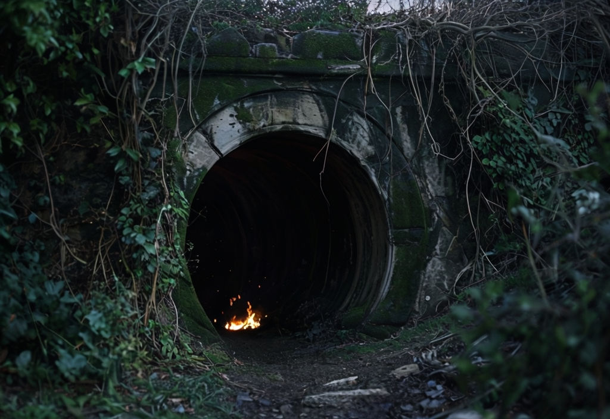
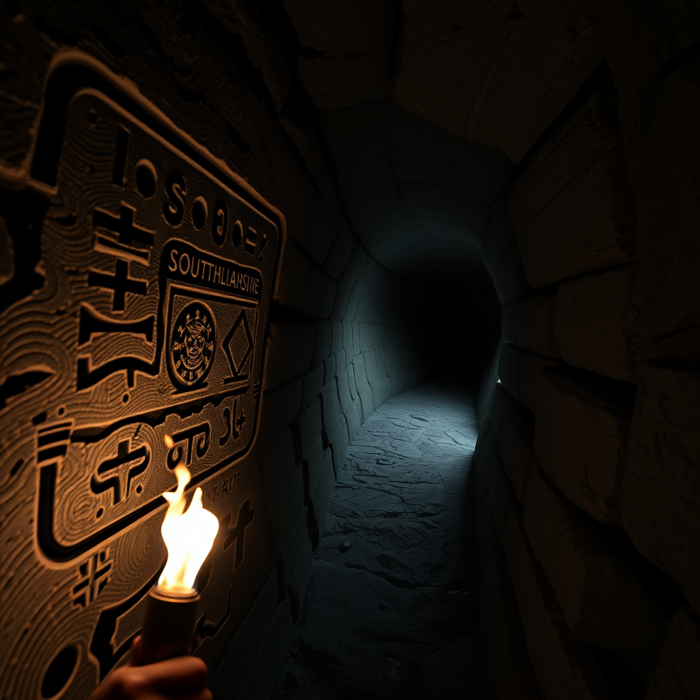
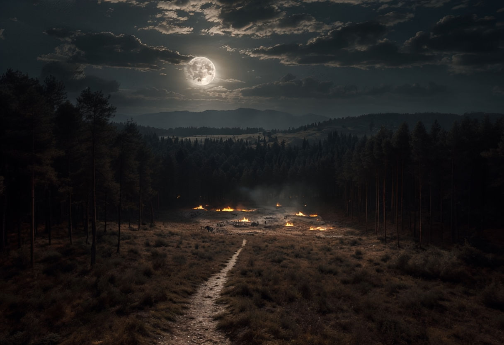
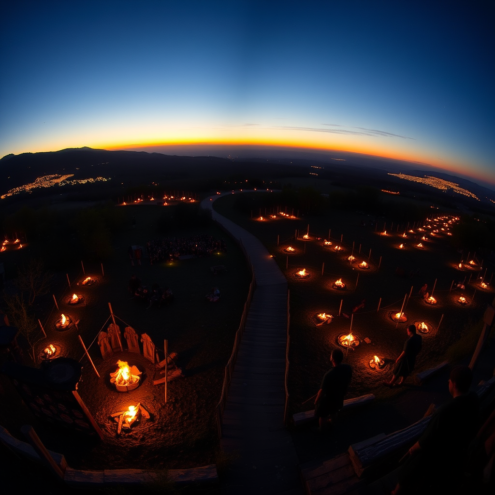
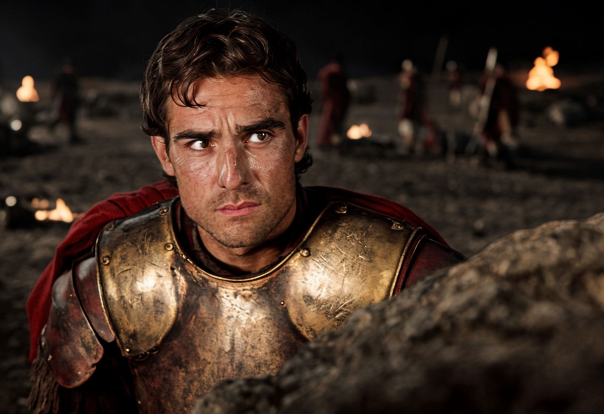
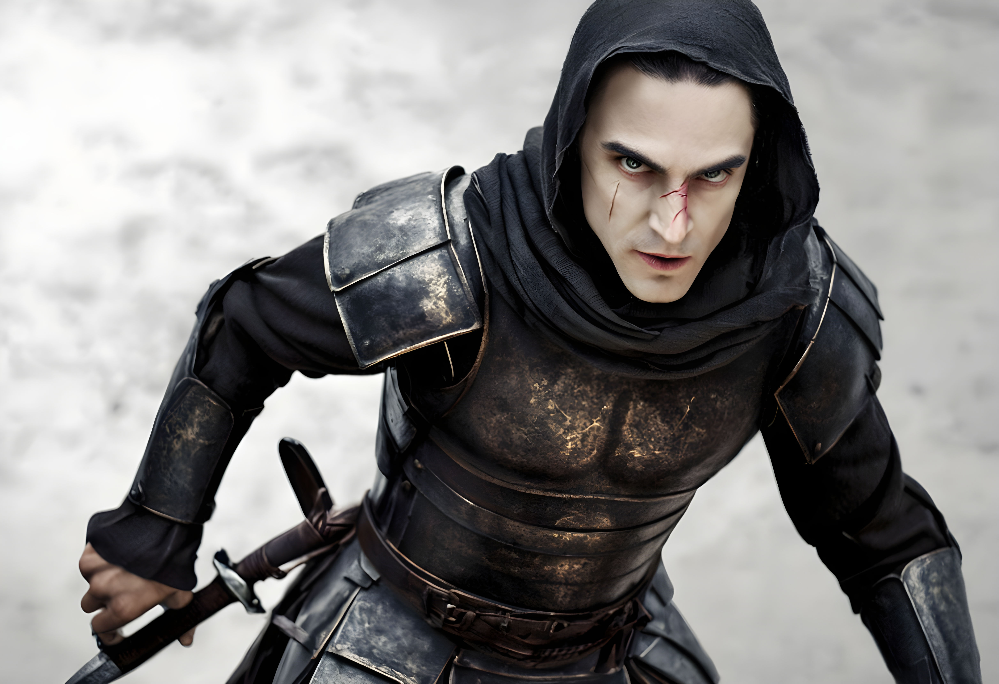
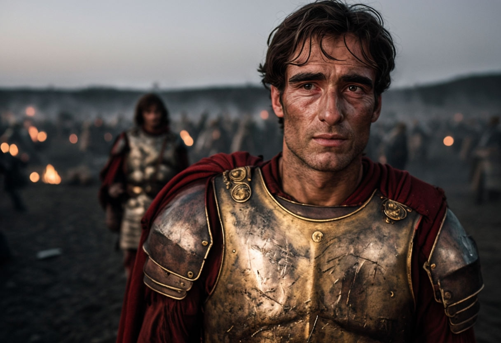
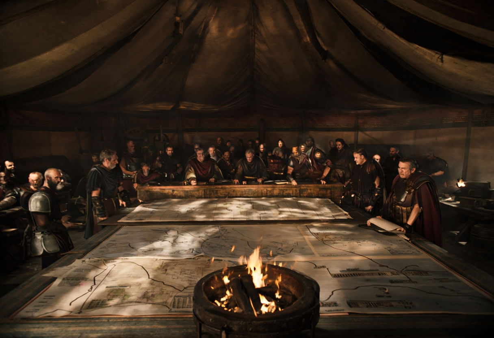
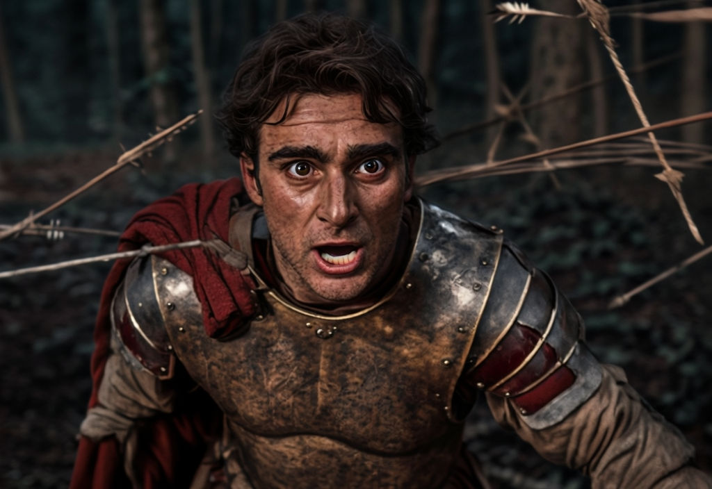

The Tale of Caesar's Cipher
Chapter 1: A Greek City Under the Night Sky
A Greek city is shrouded in darkness under a cloudy night sky. The faint moonlight barely illuminates the ancient stone streets, which are paved with uneven, weathered cobblestones.

In the midst of a war between Greece and Rome, a Roman soldier has stolen a critical scroll containing Greece's defense strategy. Greek soliders were searching for the scroll and the Roman soldier.
A Roman soldier, Sam, clad in worn armor emerges from the shadows, clutching a scroll tightly in his hand. His eyes dart around with anxiety and determination, aware that the information he holds could determine Rome's fate. He moves quickly, navigating through narrow alleys to avoid Greek patrols.

Chapter 2: The Tunnel Entrance at the City's Edge
You and Sam successfully escape from Greek Solider and meet at the tunnel entrance.
A hidden tunnel entrance at the edge of the city, covered by dense bushes and thick vines. The entrance is small and partially obscured, with vines hanging down like curtains.
The surrounding stone walls of the tunnel are rough, dark gray rocks, covered in patches of green moss and streaks of moisture. Dim light from a nearby torch casts shifting shadows on the walls, creating an atmosphere of secrecy and mystery.
The are some mysterious words on this wall. must be the message to unlock the mechanism.
Chapter 3: Head to the Forest
The hidden tunnel entrance suggests a secret passage, adding intrigue to the unfolding story.
Inside the tunnel, the stone walls are cold and slick with moisture, their dark gray surfaces glistening in the dim light of a torch. The narrow passageway winds slightly, with the rough texture of the walls and ceiling occasionally brushing against those who pass through.

Ancient symbols and grooves are carved into a stone wall blocking the path ahead, the engravings filled with dirt and partially obscured by moss, hinting at a hidden mechanism.

Sam Heathcote, a Roman soldier, lights a torch and carefully examines the ancient symbols, comparing them to a scroll he holds, searching for the correct sequence to unlock the hidden mechanism.

Chapter 4
The hidden tunnel entrance suggests a secret passage, adding intrigue to the unfolding story.
Inside the tunnel, the stone walls are cold and slick with moisture, their dark gray surfaces glistening in the dim light of a torch. The narrow passageway winds slightly, with the rough texture of the walls and ceiling occasionally brushing against those who pass through.
Ancient symbols and grooves are carved into a stone wall blocking the path ahead, the engravings filled with dirt and partially obscured by moss, hinting at a hidden mechanism.
Sam Heathcote, a Roman soldier, lights a torch and carefully examines the ancient symbols, comparing them to a scroll he holds, searching for the correct sequence to unlock the hidden mechanism.

Sam Heathcote, a Roman soldier, lights a torch and carefully examines the ancient symbols, comparing them to a scroll he holds, searching for the correct sequence to unlock the hidden mechanism.
Chapter 5: Outside the Caesar Tent
The hidden tunnel entrance suggests a secret passage, adding intrigue to the unfolding story.

Inside the tunnel, the stone walls are cold and slick with moisture, their dark gray surfaces glistening in the dim light of a torch. The narrow passageway winds slightly, with the rough texture of the walls and ceiling occasionally brushing against those who pass through.
Ancient symbols and grooves are carved into a stone wall blocking the path ahead, the engravings filled with dirt and partially obscured by moss, hinting at a hidden mechanism.
Sam Heathcote, a Roman soldier, lights a torch and carefully examines the ancient symbols, comparing them to a scroll he holds, searching for the correct sequence to unlock the hidden mechanism.
Chapter 6: The Emperor
The hidden tunnel entrance suggests a secret passage, adding intrigue to the unfolding story.

Inside the tunnel, the stone walls are cold and slick with moisture, their dark gray surfaces glistening in the dim light of a torch. The narrow passageway winds slightly, with the rough texture of the walls and ceiling occasionally brushing against those who pass through.

Ancient symbols and grooves are carved into a stone wall blocking the path ahead, the engravings filled with dirt and partially obscured by moss, hinting at a hidden mechanism.

Sam Heathcote, a Roman soldier, lights a torch and carefully examines the ancient symbols, comparing them to a scroll he holds, searching for the correct sequence to unlock the hidden mechanism.